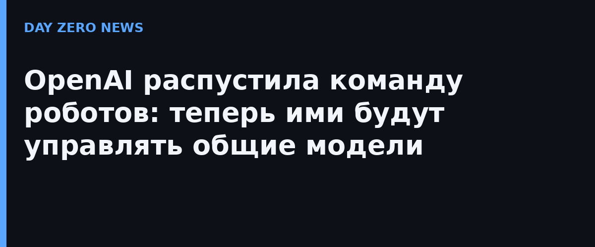

OpenAI распустила собственное отдельное робототехническое подразделение, пишет Fortune по собственному источнику, и компания подтвердила изданию реорганизацию. Исследователей перевели в другие команды: исследовательское крыло robotics теперь отчитывается напрямую научному руководителю Марку Чену, а прикладная робототехника и аппаратные команды ушли в крупное «прикладное» подразделение под началом президента компании Грега Брокмана. Пресс-секретарь подчеркнул: робототехника остаётся ядром долгосрочного видения OpenAI, а перестановки — признак приверженности этому направлению, а не отступления. Показательная деталь: OpenAI успела зарегистрировать стенд №208 на ведущей робототехнической конференции CoRL в Остине, но к моменту визита журналистов он стоял пустым.
За реорганизацией лежит ставка, которая набирает силу во всей индустрии: общие модели, обученные на языке, коде и зрении, способны управлять и «воплощённым ИИ» — роботами, беспилотниками, дронами — без отдельных команд, годами строящих узкоспециальные модели под «цифровой мозг» машины. Исследователи уже видели неожиданные результаты, подключая GPT-6 Astra к роботам напрямую: модель выполняет часть роботизированных задач без специализированного дообучения.
Это не первый раз: ранняя команда роботов у OpenAI была, но её свернули в 2020 году — соработник компании Войцех Заремба тогда ссылался на нехватку роботизированных данных и более короткий путь к AGI через огромные языковые модели, который в итоге и привёл к ChatGPT. Отдельное подразделение собрали заново в 2024-м вместе с партнёрством против стартапа Figure для создания ИИ для человекоподобных роботов; в феврале 2025-го Figure объявила, что пойдёт своим путём, и партнёрство завершилось. При этом OpenAI заявляла, что делает собственного гуманоида, а Сэм Альтман обещал первую публичную демонстрацию к 2027 году.
Отдельного официального анонса на сайте компании нет: реорганизация подтверждена лишь комментарием пресс-секретаря в ответ на запрос Fortune, поэтому детали и формулировки стоит читать именно как позицию компании, озвученную одному изданию.